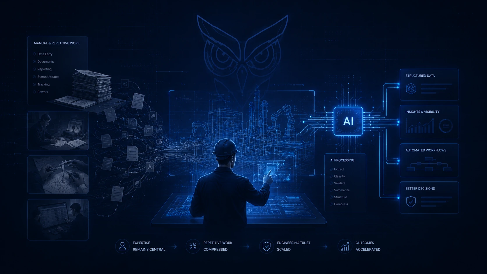
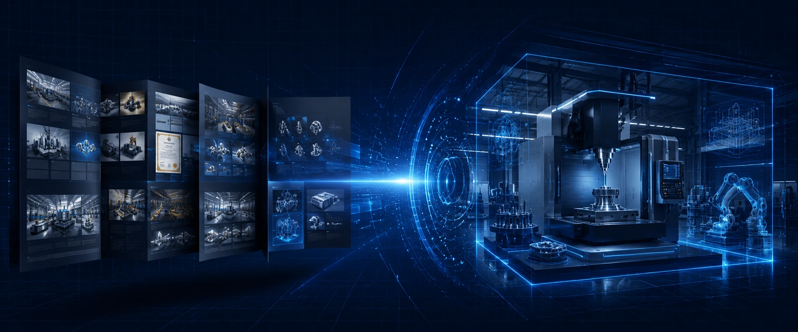
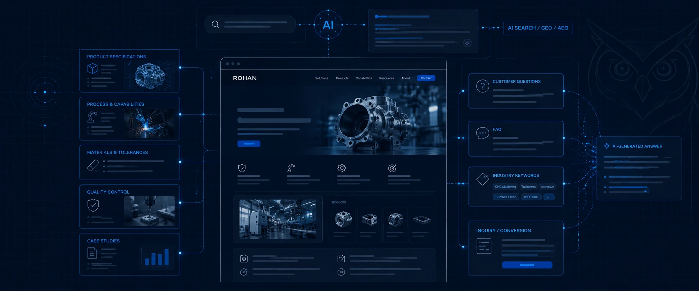
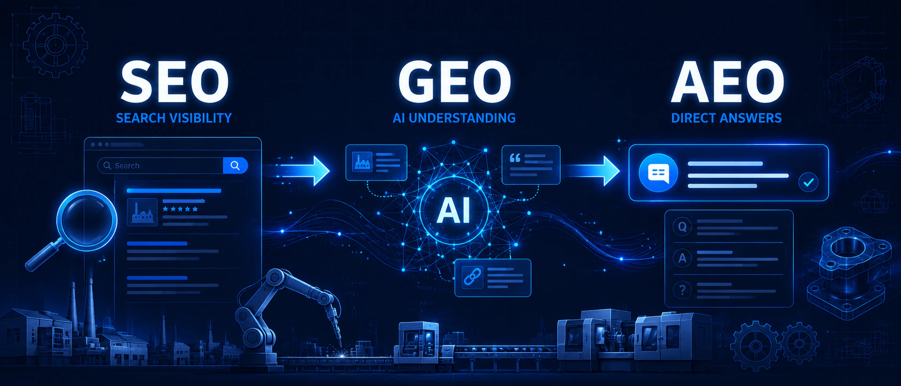

SEO 与搜索可见度
制造业如何获得 AI 搜索引用？GEO 与 AEO 实战指南
从 AI 检索机制、制造能力内容、品牌实体和第三方行业信号，到 Prompt 监测与技术 SEO，建立适合中小制造企业的 AI 搜索可见度策略。
阅读文章根据你正在解决的业务问题，快速找到对应的实操指南、研究和方法。
围绕制造业 SEO、独立站、海外内容营销和 AI 应用的原创文章与实操指南。
16 篇文章
支持中文和英文关键词搜索
从 AI 检索机制、制造能力内容、品牌实体和第三方行业信号，到 Prompt 监测与技术 SEO，建立适合中小制造企业的 AI 搜索可见度策略。
阅读文章
从采购商搜索意图、关键词地图、制造能力页面、技术 SEO 到询盘转化，建立适合中小制造企业的自然搜索增长框架。
阅读文章





没有找到匹配的文章。
请尝试其他关键词，或选择不同的内容主题。
了解 RGS 的服务，或提交你的网站与企业资料，获取实际优化建议。